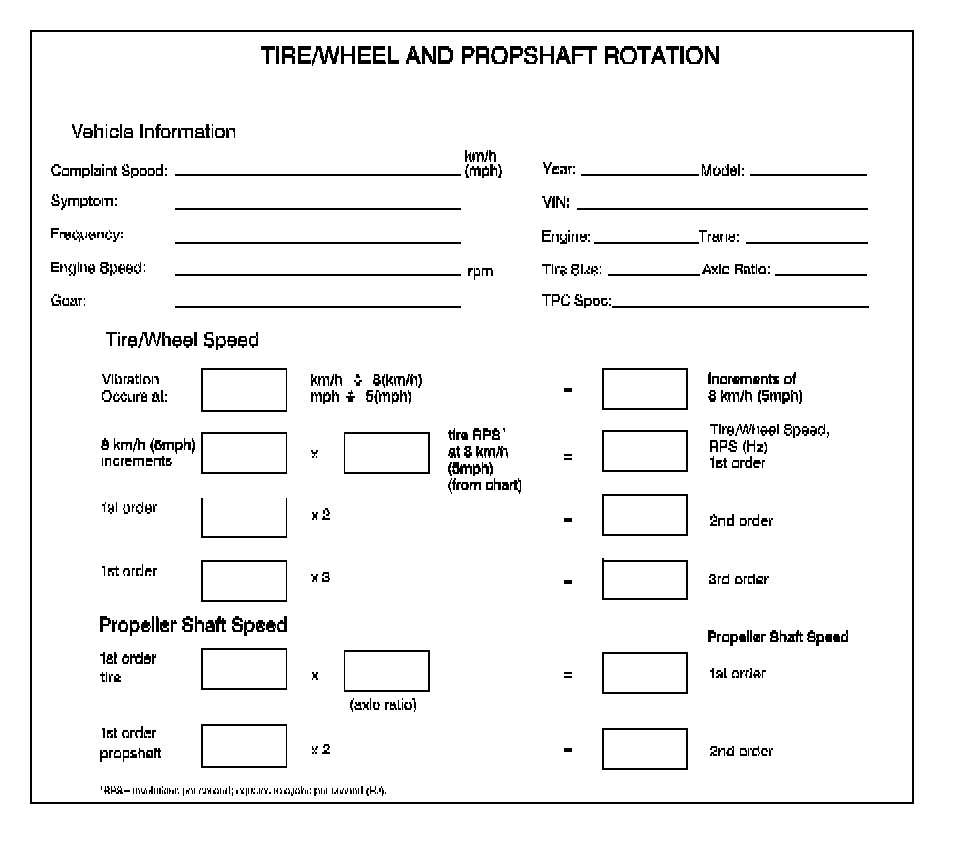

Component Rotational Speed Calculation
Component Rotational Speed Calculation
Tools Required
J 38792-A Electronic Vibration Analyzer (EVA) 2
Tire Rotational Speed
Determining Tire Revolutions Per Second at 8 km/h (5 mph) - Using EVA
Tire and wheel assembly rotational speed can be obtained through using the J 38792-A . Perform the following steps using the J 38792-A to obtain the rotational speed at 8 km/h (5 mph). Use the Enter key to advance and the Exit key to backup.
1. On the Main Menu screen, select Auto Mode.
2. On the Suspected Source screen, select Vehicle Speed.
3. On the Tire Info Source screen, select Manual Entry.
4. On the Tire Width screen, enter the specific width of the tires.
For example: For a P275/55R20 tire, enter 275.
5. On the Aspect Ratio screen, enter the specific aspect ratio of the tires.
For example: For a P275/55R20 tire, enter 0.55.
6. On the Rim Diameter screen, enter the specific rim diameter size.
For example: For a P275/55R20 tire, enter 20.0.
7. On the Driveshaft Configuration screen, enter FWD, even if the vehicle is a rear wheel drive.
8. The next screen will display the tire size just entered for confirmation.
For example: 275 0.55 20.0 - Front Wheel Drive. If the tire size displayed is correct, press Enter.
9. On the Vehicle Speed Units screen, press Enter, disregard mph or km/h.
10. Press the Exit key several times slowly while watching the backwards progression of the screens. Stop at the Tire Info Source screen.
11. On the Tire Info Source screen, select RPS at 5 mph.
12. The next screen will display the revolutions per second (RPS) at 8 km/h (5 mph) for that specific tire size.
For example: The P275/55R20 will display 0.90 RPS.
Calculating Tire Revolutions Per Second at 8 km/h (5 mph) - Without EVA
If the J 38792-A is not available, the tire and wheel assembly rotational speed can be calculated approximately by performing the following steps.
1. Convert the rim diameter size from inches to centimeters.
For example: For a P275/55R20 tire, the rim diameter of 20 in X 2.54 converts to 50.80 cm.
2. Calculate the radius of the rim by dividing the rim diameter by 2.
For example: For a P275/55R20 tire, the rim diameter of 20 in converted to 50.80 cm divided by 2 = rim radius 25.40 cm.
3. Calculate the approximate tire sidewall height by multiplying the specific tire tread width by the aspect ratio, then reduce 7 percent from the amount by multiplying by 93 percent to approximate load on the tire reducing the sidewall height.
For example: For a P275/55R20 tire, tread width 275 mm X aspect ratio as a decimal 0.55 = 151 mm X 0.93 = approximate sidewall height 140.43 mm.
4. Convert the calculated approximate tire sidewall height from millimeters to centimeters.
For example: For a P275/55R20 tire, approximate sidewall height 140.43 mm converts to 14.04 cm.
5. Calculate the approximate tire and wheel assembly radius by adding the rim radius and approximate sidewall height, both in cm.
For example: For a P275/55R20 tire, rim radius 25.40 cm + 14.04 cm = approximate tire and wheel assembly radius 39.44 cm.
6. Calculate the approximate circumference of the tire and wheel assembly by multiplying 2 X pi, or 6.283185 X the approximate tire and wheel assembly radius.
For example: For a P275/55R20 tire, 6.283185 X approximate tire and wheel assembly radius 39.44 cm = approximate tire and wheel assembly circumference 247.809 cm.
7. Calculate the approximate revolutions per kilometer by dividing the number of cm in 1 km, 100,000 cm by the approximate tire and wheel assembly circumference.
For example: For a P275/55R20 tire, 100,000 cm divided by approximate tire and wheel assembly circumference 247.809 cm = approximate revolutions per kilometer 403.537.
8. Calculate the approximate revolutions per second (RPS), or Hz, by dividing the approximate revolutions per kilometer by the number of seconds to travel 1 km at a speed of 8 km per hour, 450 seconds.
For example: For a P275/55R20 tire, approximate revolutions per kilometer 403.537 divided by the number of seconds to travel 1 km at a speed of 8 km per hour, 450 seconds = approximate RPS, or Hz 0.897 rounded to 0.90.
Calculating Tire Revolutions Per Second, or Hz at Concern Speed
A size P235/75R15 tire rotates ONE complete revolution per second (RPS), or 1 Hz, at a vehicle speed of 8 km/h (5 mph). This means that at 16 km/h (10 mph), the same tire will make 2 complete revolutions in one second, 2 Hz, and so on.
1. Determine the rotational speed of the tires in revolutions per second (RPS), or Hertz (Hz), at 8 km/h (5 mph), based on the size of the tires. Refer to the preceding Tire Rotational Speed information.
For example: According to the Tire Rotational Speed information, a P275/55R20 tire makes 0.90 revolutions per second, or Hz at a vehicle speed of 8 km/h (5 mph). This means that for every increment of 8 km/h (5 mph) in vehicle speed, the tire rotation increases by 0.90 revolutions per second, or Hz.
2. Determine the number of increments of 8 km/h (5 mph) that are present, based on the vehicle speed km/h (mph) at which the disturbance occurs.
For example: Assume that a disturbance occurs at a vehicle speed of 96 km/h (60 mph). A speed of 96 km/h (60 mph) has 12 INCREMENTS of 8 km/h (5 mph):
96 km/h (60 mph) divided by 8 km/h (5 mph) = 12 increments
3. Determine the rotational speed of the tires in revolutions per second, or Hz, at the specific vehicle speed km/h (mph) at which the disturbance occurs.
For example: To determine the tire rotational speed at 96 km/h (60 mph), multiply the number of increments of 8 km/h (5 mph) by the revolutions per second, or Hz, for one increment:
12 (increments) X 0.90 Hz = 10.80 Hz, rounded to 11 Hz
Important: If the J 38792-A is not available, compare the calculated rotational speed to the frequency range associated with the symptoms of the vibration concern. Refer to Symptoms - Vibration Diagnosis and Correction (Symptoms - Vibration Diagnosis and Correction) .
4. Compare the rotational speed of the tires at the specific vehicle speed at which the disturbance occurs, to the dominant frequency recorded on the J 38792-A during testing. If the frequencies match, then a first-order disturbance related to the rotation of the tire/wheel assemblies is present.
If the frequencies do not match, then the disturbance may be related to a higher order of tire/wheel assembly rotation.
5. To compute higher order tire/wheel assembly rotation related disturbances, multiply the rotational speed of the tires at the specific vehicle speed at which the disturbance occurs, by the order number:
11 Hz X 2, for second order = 22 Hz second-order tire/wheel assembly rotation related
11 Hz X 3, for third order = 33 Hz third-order tire/wheel assembly rotation related
If any of these computations match the frequency of the disturbance, a disturbance of that particular order, relating to the rotation of the tire/wheel assemblies and/or driveline components, also rotating at the same speed, is present.
Calculating Propeller Shaft Revolutions Per Second, or Hz at Concern Speed
1. Determine the first order rotational speed of the propeller shaft system in revolutions per second, or Hz, based on the first-order rotational speed of the tire/wheel assemblies and the drive axle, or axles final drive ratio or ratios.
11 Hz X 3.42 drive axle final drive ratio = 37.62 Hz, rounded to 38 Hz, first-order propeller shaft rotation related
2. Compare the rotational speed of the propeller shafts at the specific vehicle speed at which the disturbance occurs, to the dominant frequency recorded on the J 38792-A during testing. If the frequencies match, then a first-order disturbance related to the rotation of the propeller shaft is present.
If the frequencies do not match, then the disturbance may be related to the second-order of propeller shaft rotation.
3. To compute a second order propeller shaft rotation related disturbance, multiply the first order rotational speed of the propeller shaft at the specific vehicle speed at which the disturbance occurs, by the order number of 2:
38 Hz X 2, for second order = 76 Hz second-order propeller shaft rotation related
If the computation matches the frequency of the disturbance, a disturbance relating to the second-order rotation of the propeller shaft is present.
Component Rotational Speed Worksheet
Utilize the following worksheet as an aid in calculating the first, second and third order of tire/wheel assembly rotational speed and the first and second order of propeller shaft rotational speed related disturbances that may be present in the vehicle.
If after completing the Tire/Wheel Rotation Worksheet, the frequencies calculated do NOT match the dominant frequency of the disturbance recorded during testing, either recheck the data, or attempt to rematch the figures allowing for 11/2-8 km/h (1-5 mph) of speedometer error.
If the possible tire/wheel assembly and/or propeller shaft rotational speed related frequencies still do not match the dominant frequency of the disturbance, the disturbance is most likely torque/load sensitive.
If after completing the Tire/Wheel Rotation Worksheet, one of the frequencies calculated DOES match the dominant frequency of the disturbance, the disturbance is related to the rotation of that component group - tire/wheel assembly or propeller shaft related.
Component Rotational Speed Worksheet:
